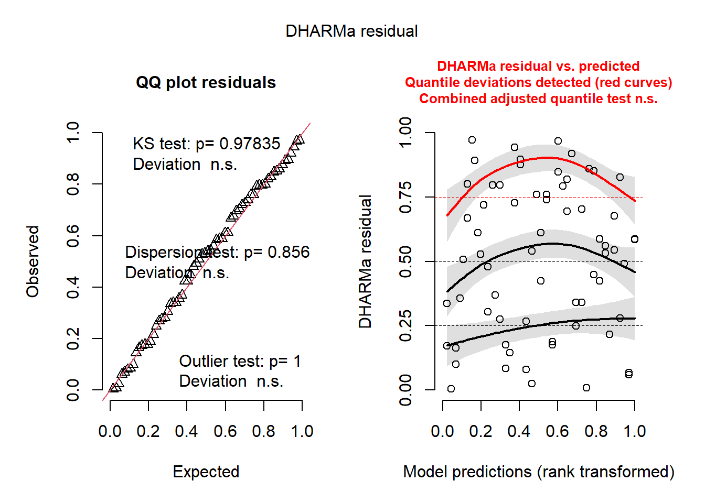

Chapter 2 Species discrimination and prediction
2.1 Species markers
This report shows how the peaks discriminative for F. sanguinea and F. fusca were determined. We will use the chemical data collected from the filed colonies in the earlier study (Włodarczyk and Szczepaniak 2017). In this way our method of markers selection is blind to the dataset to which markers will be applied avoiding potential source of the bias in the analysis results.
suppressMessages({
library(sangchem)
library(stringi)
library(dplyr)
library(mixOmics)
})
# load data from the the earlier study
data("field_colonies")
# select samples from F. sanguinea ants and free-living F. fusca ants encoded in chromatogram_ID
fusca_samples <- as.character(unique(field_colonies$chromatogram_ID)[stri_detect_regex(unique(field_colonies$chromatogram_ID), "fus[0-9].?-[0-9]\\([1-2]\\)")])
sanguinea_samples<-as.character(unique(field_colonies$chromatogram_ID)[stri_detect_regex(unique(field_colonies$chromatogram_ID),"sangFs[0-9].?\\([0-9]\\)")])
# remove outliers
sanguinea_samples <- setdiff(sanguinea_samples,c("sangFs2(1)","sangFs5(2)","sangFs26(1)","sangFs26(2)"))
fusca_samples <- setdiff(fusca_samples,c("fus9-2(1)", "fus26-3(2)"))
discrimination_data <- filter(field_colonies,chromatogram_ID %in% c(fusca_samples,sanguinea_samples))
peak_prop_unfiltered <- peak_proportions_table(discrimination_data)
# feature selection
peak_prop <- freq_abun_QC(peak_prop_unfiltered)
# re-normalize rows to 1
peak_prop <- peak_prop/rowSums(peak_prop)
# replace zeros with a small number before transformation
peak_prop[peak_prop==0] <- 10^-16
# apply central log ratio transformation
peak_transformed <- t(apply(peak_prop, 1, clr_transformation))We also need to deifne our reponse variable to be explained by discrimination model.
Now that we have prepared the input data we can run the model. The following workflow is based on the tutorial available at the official mixOmics package web site.
set.seed(9230)
# run the main model
species_discrimination_PC.plsda <- plsda(PCA_species_discr$x, Y, ncomp=10, scale=FALSE)
plotIndiv(species_discrimination_PC.plsda,group=Y,
legend=TRUE,ellipse=TRUE,comp=1:2)
# determine the optimal number of components used in the model
spec_discr_PC.plsda.perf<-perf(species_discrimination_PC.plsda, nrepeat = 10,folds=5,
progressBar = FALSE,validation = "Mfold",
auc=TRUE, scale=FALSE)
plot(spec_discr_PC.plsda.perf, sd = TRUE, overlay = 'measure')
The diagnstic plots suggests that we should keep 2 components for the final model.
selected_n <- 2
# dtermine the number of the original variables to be kept in each component (actually
# here we have only one component)
spec_discr_PC.splsda <- tune.splsda(PCA_species_discr$x,Y,test.keepX = c(1:60),ncomp = selected_n,
validation="Mfold", progressBar=FALSE, dist="max.dist",
nrepeat=5, cpus=2, folds=5, measure="BER", scale=FALSE)
# final model
species_prediction_model <- splsda(PCA_species_discr$x, Y, ncomp=selected_n,
keepX =spec_discr_PC.splsda$choice.keepX, scale=FALSE)
# visuzalize results for the first two commponents
plotIndiv(species_prediction_model, group=Y, legend=TRUE, ellipse=TRUE, comp=1:2)
Now we want to correlate relative abundances of CHCs with the species predicted by the model for each sample.
# quantify predicted species (F. sanguinea closer to one and F. fusca closer to 0)
predicted_species <- predict(species_prediction_model, PCA_species_discr$x)$predict[,2,species_prediction_model$ncomp]
library(Hmisc)
cor_p_val<-rcorr(cbind(peak_prop, predicted_species))
cor_p_val$P[cor_p_val$r==1]<-0
#significance threshold = 0.05
significant_correlations <- cor_p_val$r["predicted_species",][cor_p_val$P["predicted_species",]<0.05]
peaks_sang <- names(significant_correlations)[significant_correlations>0]
peaks_sang <- as.numeric((setdiff(peaks_sang,"predicted_species")))
peaks_fusca <- as.numeric(names(significant_correlations)[significant_correlations<0])
print(peaks_sang)## [1] 22 24 30 35 42 43 47 49 51 56 57 58 59 61 63 68 71 75 76 77 78 79
## [23] 81 83 85 92 93 94 95 97 99 102 109 110 111 113 124 125 126## [1] 7 8 9 11 12 14 15 16 18 19 23 27 29 31 32 33 36 37 38 41 45 46 55The objects peaks_sang, peaks_fusca, species_prediction_model and PCA_species_discr are stored in the package and can be collectively loaded into the global environment along with the other objects by running load_globals().
globals <- readRDS(system.file("globals.rds", package="sangchem"))
globals[["species_prediction_model"]] <- species_prediction_model
globals[["PCA_species_discr"]] <- PCA_species_discr
globals[["peak_sang"]] <- peaks_sang
globals[["peak_fusca"]] <- peaks_fusca
saveRDS(globals, system.file("globals.rds", package="sangchem"))2.1.1 Peak position on the species discriminant axis
We might ask how a given peak compares to other in term of being characteristic more of one or the other species. Correspondingly we will generate the artificial profiles which are composed of only one peak to see how each peak contributes to the species prediction.
unit_input <- diag(rep(1, ncol(peak_prop)))
colnames(unit_input) <- rownames(unit_input) <-colnames(peak_prop)
res <- calculate_SII(unit_input)
colnames(res)[1] <- "peak ID"
# normalize scores
res[,2] <- res[,2] - mean(res[,2])
res[,2] <- res[,2]/sd(res[,2])
print(res[order(res$predicted_species),])## peak ID predicted_species
## 15 15 -1.67522648
## 33 33 -1.59626551
## 23 23 -1.54303837
## 8 8 -1.47463684
## 29 29 -1.46619152
## 12 12 -1.44049558
## 16 16 -1.43112785
## 37 37 -1.37360481
## 18 18 -1.37262224
## 14 14 -1.34644266
## 32 32 -1.34389491
## 31 31 -1.30661216
## 7 7 -1.27324585
## 38 38 -1.17702799
## 9 9 -1.17553109
## 50 50 -1.17231288
## 24 24 -1.15553178
## 35 35 -1.01238252
## 49 49 -0.98196165
## 19 19 -0.68765311
## 13 13 -0.64827594
## 28 28 -0.53378475
## 74 74 -0.53077631
## 72 72 -0.50187722
## 11 11 -0.47892464
## 64 64 -0.47021456
## 41 41 -0.43654068
## 46 46 -0.39298952
## 45 45 -0.36042926
## 51 51 -0.33246303
## 62 62 -0.33126226
## 57 57 -0.26564144
## 21 21 -0.23681135
## 55 55 -0.19539041
## 27 27 -0.17534378
## 54 54 -0.15538451
## 43 43 -0.14983263
## 47 47 -0.13862096
## 36 36 -0.12317803
## 53 53 -0.11745639
## 60 60 -0.09189079
## 20 20 -0.01529696
## 40 40 0.19549092
## 22 22 0.20375015
## 77 77 0.38270557
## 109 109 0.43777423
## 95 95 0.51454714
## 58 58 0.55015372
## 59 59 0.56253652
## 111 111 0.56304855
## 125 125 0.57914127
## 113 113 0.59850393
## 81 81 0.66597213
## 126 126 0.71390172
## 124 124 0.75321801
## 76 76 0.80078228
## 94 94 0.80260365
## 56 56 0.87806854
## 78 78 0.89317999
## 68 68 0.93674449
## 75 75 1.02780097
## 83 83 1.04337755
## 71 71 1.10901724
## 63 63 1.19640565
## 52 52 1.22465836
## 110 110 1.29989321
## 42 42 1.30529795
## 79 79 1.30531617
## 92 92 1.34996683
## 61 61 1.43176036
## 99 99 1.47666741
## 93 93 1.49297412
## 85 85 1.52557445
## 30 30 1.58839498
## 97 97 1.62358835
## 102 102 1.655374832.2 Species identity score
Ants in mixed colonies mixed CHCs to produce hybrid chemical identity. Here we develop the method to assign each sample a number indicating how much it is characteristic of one or the other species.
The main idea is to fit a sPLS_DA model to the training set (sampled from field colonies) and use it predict the explanatory variable (species) in the test data (samples from experimental colonies). However the sPLS_DA model run on the raw data will yield the classificator which used only few variables (peaks) due to the well separation of samples of both species. The unused variables might also be informative in the species discrimination task. We want to use as much data as it is possible to make robust predictions and thus we will use principal component analysis output. Thus, the rotation matrix from the principal component analysis will be used to transform input data to the discrimination model. The correspondig code in encapsulated in the claculate_SII function.
2.2.1 Data preparation
data("development_data")
dev_samples <- filter(development_data, caste=="worker",!is.na(head_width), !remarks %in% c("aggression actor", "aggression target", "queenless colony")) %>%
dplyr::select(chromatogram_ID, species, colony, sang_prop, callow, census_date)
normalized_abundances <- peak_proportions_table(mass_spectra_data[mass_spectra_data$chromatogram_ID %in% dev_samples$chromatogram_ID,])
species_indices <- calculate_SII(normalized_abundances)
dev_samples <- left_join(dev_samples, species_indices)## Joining with `by = join_by(chromatogram_ID)`2.2.2 Predicted species of different categories of ants as a function of the proportion of F. sanguinea ants in a colony
2.2.2.1 Mature F. sanguinea
library(lmerTest)
library(DHARMa)
model_input <- dev_samples[dev_samples$species=="F. sanguinea"&dev_samples$callow==0,]
lm_model <- lmer(predicted_species~sang_prop+(1|colony)+(1|colony:census_date), data=model_input)## boundary (singular) fit: see help('isSingular')## Linear mixed model fit by REML. t-tests use Satterthwaite's method ['lmerModLmerTest']
## Formula: predicted_species ~ sang_prop + (1 | colony) + (1 | colony:census_date)
## Data: model_input
##
## REML criterion at convergence: -41.8
##
## Scaled residuals:
## Min 1Q Median 3Q Max
## -2.00569 -0.42348 0.05274 0.47747 1.79013
##
## Random effects:
## Groups Name Variance Std.Dev.
## colony:census_date (Intercept) 0.01652 0.1285
## colony (Intercept) 0.00000 0.0000
## Residual 0.01551 0.1246
## Number of obs: 68, groups: colony:census_date, 44; colony, 16
##
## Fixed effects:
## Estimate Std. Error df t value Pr(>|t|)
## (Intercept) 0.37214 0.04393 41.98571 8.472 1.24e-10 ***
## sang_prop 0.63883 0.08527 41.29434 7.492 3.21e-09 ***
## ---
## Signif. codes: 0 '***' 0.001 '**' 0.01 '*' 0.05 '.' 0.1 ' ' 1
##
## Correlation of Fixed Effects:
## (Intr)
## sang_prop -0.824
## optimizer (nloptwrap) convergence code: 0 (OK)
## boundary (singular) fit: see help('isSingular')
##
## Shapiro-Wilk normality test
##
## data: residuals(lm_model)
## W = 0.98471, p-value = 0.5724
2.2.2.2 F. fusca
model_input <- dev_samples[dev_samples$species=="F. fusca",]
lm_model <- lmer(predicted_species~sang_prop+(1|colony)+(1|colony:census_date), data=model_input)
print(summary(lm_model))## Linear mixed model fit by REML. t-tests use Satterthwaite's method ['lmerModLmerTest']
## Formula: predicted_species ~ sang_prop + (1 | colony) + (1 | colony:census_date)
## Data: model_input
##
## REML criterion at convergence: -37.9
##
## Scaled residuals:
## Min 1Q Median 3Q Max
## -1.56512 -0.50554 -0.05227 0.44497 2.08070
##
## Random effects:
## Groups Name Variance Std.Dev.
## colony:census_date (Intercept) 0.014951 0.12227
## colony (Intercept) 0.005293 0.07275
## Residual 0.017552 0.13249
## Number of obs: 80, groups: colony:census_date, 57; colony, 20
##
## Fixed effects:
## Estimate Std. Error df t value Pr(>|t|)
## (Intercept) 0.26444 0.03654 40.72515 7.236 7.96e-09 ***
## sang_prop 0.62465 0.08003 42.67037 7.806 9.42e-10 ***
## ---
## Signif. codes: 0 '***' 0.001 '**' 0.01 '*' 0.05 '.' 0.1 ' ' 1
##
## Correlation of Fixed Effects:
## (Intr)
## sang_prop -0.637
##
## Shapiro-Wilk normality test
##
## data: residuals(lm_model)
## W = 0.98502, p-value = 0.4757
2.2.2.3 Callow F. sanguinea
model_input <- dev_samples[dev_samples$species=="F. sanguinea"&dev_samples$callow==1,]
lm_model <- lmer(predicted_species~sang_prop+(1|colony), data=model_input)## boundary (singular) fit: see help('isSingular')## Linear mixed model fit by REML. t-tests use Satterthwaite's method ['lmerModLmerTest']
## Formula: predicted_species ~ sang_prop + (1 | colony)
## Data: model_input
##
## REML criterion at convergence: -16.6
##
## Scaled residuals:
## Min 1Q Median 3Q Max
## -1.8739 -0.4978 -0.2125 0.5758 2.8656
##
## Random effects:
## Groups Name Variance Std.Dev.
## colony (Intercept) 0.00000 0.0000
## Residual 0.02892 0.1701
## Number of obs: 32, groups: colony, 16
##
## Fixed effects:
## Estimate Std. Error df t value Pr(>|t|)
## (Intercept) 0.19907 0.05353 30.00000 3.719 0.000821 ***
## sang_prop 0.63388 0.10063 30.00000 6.299 6.06e-07 ***
## ---
## Signif. codes: 0 '***' 0.001 '**' 0.01 '*' 0.05 '.' 0.1 ' ' 1
##
## Correlation of Fixed Effects:
## (Intr)
## sang_prop -0.827
## optimizer (nloptwrap) convergence code: 0 (OK)
## boundary (singular) fit: see help('isSingular')
##
## Shapiro-Wilk normality test
##
## data: residuals(lm_model)
## W = 0.95225, p-value = 0.1669
2.2.3 Difference in species prediction between mature F. sanguinea ants and their slaves
model_input <- dev_samples[dev_samples$species=="F. sanguinea"&dev_samples$callow==0,]
model_input$index_diff <- model_input$predicted_species - find_nestmates_SII(model_input$chromatogram_ID, dev_samples)
lm_model <- lmer(index_diff~sang_prop+(1|colony)+(1|colony:census_date), data=model_input)## boundary (singular) fit: see help('isSingular')## Linear mixed model fit by REML. t-tests use Satterthwaite's method ['lmerModLmerTest']
## Formula: index_diff ~ sang_prop + (1 | colony) + (1 | colony:census_date)
## Data: model_input
##
## REML criterion at convergence: -21
##
## Scaled residuals:
## Min 1Q Median 3Q Max
## -2.01668 -0.42235 0.00848 0.43098 1.50521
##
## Random effects:
## Groups Name Variance Std.Dev.
## colony:census_date (Intercept) 0.03337 0.1827
## colony (Intercept) 0.00000 0.0000
## Residual 0.01577 0.1256
## Number of obs: 66, groups: colony:census_date, 42; colony, 16
##
## Fixed effects:
## Estimate Std. Error df t value Pr(>|t|)
## (Intercept) 0.116479 0.057384 38.755040 2.030 0.0493 *
## sang_prop 0.002682 0.118880 37.071711 0.023 0.9821
## ---
## Signif. codes: 0 '***' 0.001 '**' 0.01 '*' 0.05 '.' 0.1 ' ' 1
##
## Correlation of Fixed Effects:
## (Intr)
## sang_prop -0.824
## optimizer (nloptwrap) convergence code: 0 (OK)
## boundary (singular) fit: see help('isSingular')
##
## Shapiro-Wilk normality test
##
## data: residuals(lm_model)
## W = 0.98561, p-value = 0.6429
2.2.4 Difference in species prediction between callow F. sanguinea ants and their slaves
Since the linear model does not meet one of diagnostics criterion we will apply Wilcoxon paired test.
library(ggpubr)
library(rstatix)
model_input <- dev_samples[dev_samples$species=="F. sanguinea"&dev_samples$callow==1,]
model_input$slave_species_index <- find_nestmates_SII(model_input$chromatogram_ID, dev_samples)
print(wilcox.test(model_input$predicted_species, model_input$slave_species_index, paired=TRUE))##
## Wilcoxon signed rank exact test
##
## data: model_input$predicted_species and model_input$slave_species_index
## V = 175, p-value = 0.2449
## alternative hypothesis: true location shift is not equal to 0df <- data.frame(species_identity_index=c(model_input$predicted_species, model_input$slave_species_index), species="F. fusca")
df$species[1:nrow(model_input)] <- "callow F. sanguinea"
stat_tests <- wilcox_test(df, species_identity_index~species, paired=TRUE) %>%
add_significance("p") %>%
add_xy_position(x="species", dodge=0.8, fun="max")
ggboxplot(df, x="species", y="species_identity_index")+
scale_y_continuous(expand = expansion(mult=c(0.02,0.1)))+
stat_pvalue_manual(stat_tests, label="p", tip.length = 0, size=3.5)## Warning: Removed 2 rows containing non-finite outside the scale range (`stat_boxplot()`).
2.2.5 Difference in species prediction between callow and mature F. sanguinea ants.
model_input <- dev_samples[dev_samples$species=="F. sanguinea"&dev_samples$callow==1,]
model_input$index_diff <- model_input$predicted_species - find_nestmates_SII(model_input$chromatogram_ID, dev_samples, heterospecific = FALSE)
# no random effect since it captures no variance
lm_model <- lm(index_diff~sang_prop, data=model_input)
print(summary(lm_model))##
## Call:
## lm(formula = index_diff ~ sang_prop, data = model_input)
##
## Residuals:
## Min 1Q Median 3Q Max
## -0.37773 -0.12187 0.00454 0.08789 0.35393
##
## Coefficients:
## Estimate Std. Error t value Pr(>|t|)
## (Intercept) -0.19508 0.05927 -3.292 0.0027 **
## sang_prop 0.05344 0.10843 0.493 0.6260
## ---
## Signif. codes: 0 '***' 0.001 '**' 0.01 '*' 0.05 '.' 0.1 ' ' 1
##
## Residual standard error: 0.177 on 28 degrees of freedom
## (2 observations deleted due to missingness)
## Multiple R-squared: 0.008601, Adjusted R-squared: -0.02681
## F-statistic: 0.2429 on 1 and 28 DF, p-value: 0.626
##
## Shapiro-Wilk normality test
##
## data: residuals(lm_model)
## W = 0.97036, p-value = 0.54912.3 Session info
## R version 4.4.2 (2024-10-31 ucrt)
## Platform: x86_64-w64-mingw32/x64
## Running under: Windows 11 x64 (build 22631)
##
## Matrix products: default
##
##
## locale:
## [1] LC_COLLATE=English_Bahamas.utf8 LC_CTYPE=English_Bahamas.utf8
## [3] LC_MONETARY=English_Bahamas.utf8 LC_NUMERIC=C
## [5] LC_TIME=English_Bahamas.utf8
##
## time zone: Europe/Warsaw
## tzcode source: internal
##
## attached base packages:
## [1] stats graphics grDevices utils datasets methods base
##
## other attached packages:
## [1] rstatix_0.7.2 ggpubr_0.6.0 Hmisc_5.2-0
## [4] mixOmics_6.30.0 ggplot2_3.5.1 lattice_0.22-6
## [7] MASS_7.3-61 stringi_1.8.4 DHARMa_0.4.7
## [10] sangchem_0.0.9000 spatstat_3.3-0 spatstat.linnet_3.2-3
## [13] spatstat.model_3.3-3 rpart_4.1.23 spatstat.explore_3.3-3
## [16] nlme_3.1-166 spatstat.random_3.3-2 spatstat.geom_3.3-4
## [19] spatstat.univar_3.1-1 spatstat.data_3.1-4 dplyr_1.1.4
## [22] lmerTest_3.1-3 lme4_1.1-35.5 Matrix_1.7-1
##
## loaded via a namespace (and not attached):
## [1] chromConverter_0.7.2 splines_4.4.2 later_1.4.0 bitops_1.0-9
## [5] tibble_3.2.1 cellranger_1.1.0 polyclip_1.10-7 lifecycle_1.0.4
## [9] Rdpack_2.6.2 doParallel_1.0.17 rprojroot_2.0.4 processx_3.8.4
## [13] backports_1.5.0 magrittr_2.0.3 sass_0.4.9 rmarkdown_2.29
## [17] jquerylib_0.1.4 yaml_2.3.10 remotes_2.5.0 httpuv_1.6.15
## [21] gap_1.6 sessioninfo_1.2.2 pkgbuild_1.4.5 spatstat.sparse_3.1-0
## [25] reticulate_1.40.0 minqa_1.2.8 RColorBrewer_1.1-3 abind_1.4-8
## [29] pkgload_1.4.0 purrr_1.0.2 nnet_7.3-19 ggrepel_0.9.6
## [33] spatstat.utils_3.1-1 ellipse_0.5.0 testthat_3.2.1.1 vegan_2.6-8
## [37] goftest_1.2-3 RSpectra_0.16-2 permute_0.9-7 codetools_0.2-20
## [41] xml2_1.3.6 tidyselect_1.2.1 farver_2.1.2 matrixStats_1.4.1
## [45] base64enc_0.1-3 jsonlite_1.8.9 ellipsis_0.3.2 Formula_1.2-5
## [49] iterators_1.0.14 foreach_1.5.2 tools_4.4.2 Rcpp_1.0.13-1
## [53] glue_1.8.0 rARPACK_0.11-0 gridExtra_2.3 xfun_0.49
## [57] here_1.0.1 mgcv_1.9-1 usethis_3.1.0 withr_3.0.2
## [61] numDeriv_2016.8-1.1 fastmap_1.2.0 boot_1.3-31 callr_3.7.6
## [65] digest_0.6.37 R6_2.5.1 mime_0.12 colorspace_2.1-1
## [69] tensor_1.5 utf8_1.2.4 tidyr_1.3.1 generics_0.1.3
## [73] data.table_1.16.4 corpcor_1.6.10 htmlwidgets_1.6.4 RaMS_1.4.3
## [77] pkgconfig_2.0.3 gtable_0.3.6 brio_1.1.5 htmltools_0.5.8.1
## [81] carData_3.0-5 profvis_0.4.0 bookdown_0.41 scales_1.3.0
## [85] png_0.1-8 knitr_1.49 rstudioapi_0.17.1 reshape2_1.4.4
## [89] checkmate_2.3.2 nloptr_2.1.1 cachem_1.1.0 stringr_1.5.1
## [93] parallel_4.4.2 miniUI_0.1.1.1 foreign_0.8-87 desc_1.4.3
## [97] pillar_1.10.0 grid_4.4.2 vctrs_0.6.5 urlchecker_1.0.1
## [101] promises_1.3.1 car_3.1-3 xtable_1.8-4 cluster_2.1.6
## [105] htmlTable_2.4.3 evaluate_1.0.1 cli_3.6.3 compiler_4.4.2
## [109] rlang_1.1.4 ggsignif_0.6.4 labeling_0.4.3 ps_1.8.1
## [113] plyr_1.8.9 fs_1.6.5 gap.datasets_0.0.6 deldir_2.0-4
## [117] BiocParallel_1.40.0 HDInterval_0.2.4 munsell_0.5.1 devtools_2.4.5
## [121] bit64_4.5.2 qgam_1.3.4 shiny_1.10.0 rbibutils_2.3
## [125] broom_1.0.7 igraph_2.1.1 memoise_2.0.1 bslib_0.8.0
## [129] bit_4.5.0.1 readxl_1.4.3